Spåra, klipp och nyp, 3–6 år
Korta lekar för små fingrar: spåra vägar, nyp, sortera och klipp längs linjen. Med översikt och färdighetslista för dig som vuxen. Inga annonser.
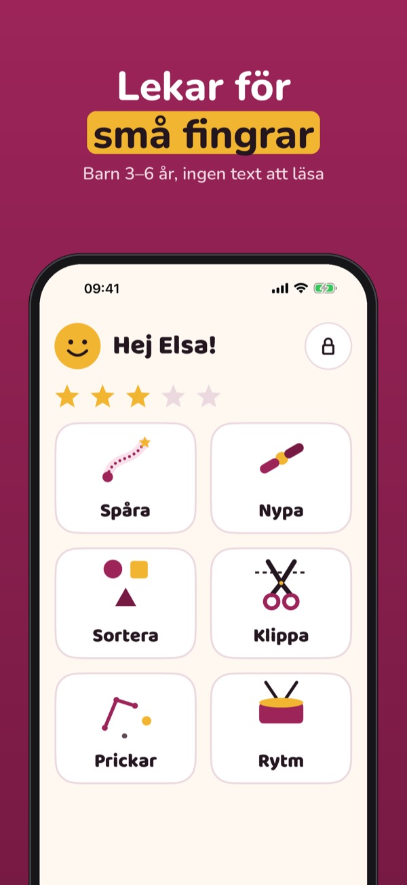
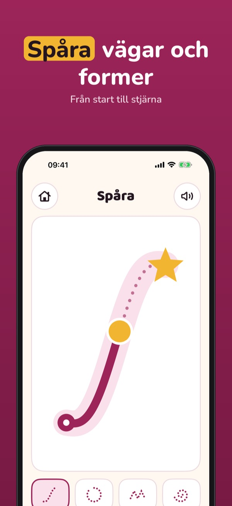
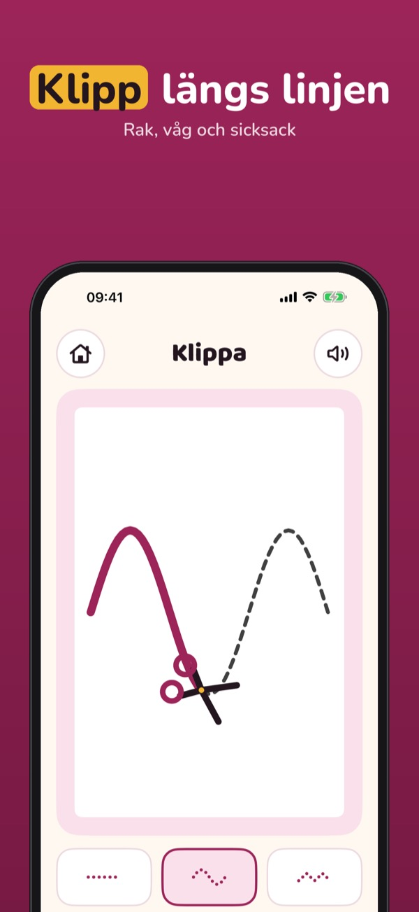
Fingerklar är finmotoriska lekar för barn 3–6 år, med ett vuxenområde där du ser framstegen och en färdighetslista för förälder, förskola eller arbetsterapeut.
Spåra, nypa och sortera med tre banor vardera, dagens översikt och timern kan användas utan köp. Fullversionen är ett engångsköp som låser upp klippa, prickar och rytm, alla banor, hela färdighetslistan och flera barn. Ingen prenumeration.
Fingerklar är lek och övning. Appen gör ingen bedömning, ställer ingen diagnos och ersätter inte arbetsterapi eller BVC. Inga annonser. Inte knuten till någon förening eller myndighet.
Terms of Use (EULA): https://www.apple.com/legal/internet-services/itunes/dev/stdeula/
Privacy: https://baytechbv.github.io/privacy/fingerklar-eu/
Spor, klipp og klyp, 3–6 år
Korte leker for små fingre: spor veier, klyp, sorter og klipp langs linjen. Med oversikt og ferdighetsliste for deg som voksen. Ingen reklame.
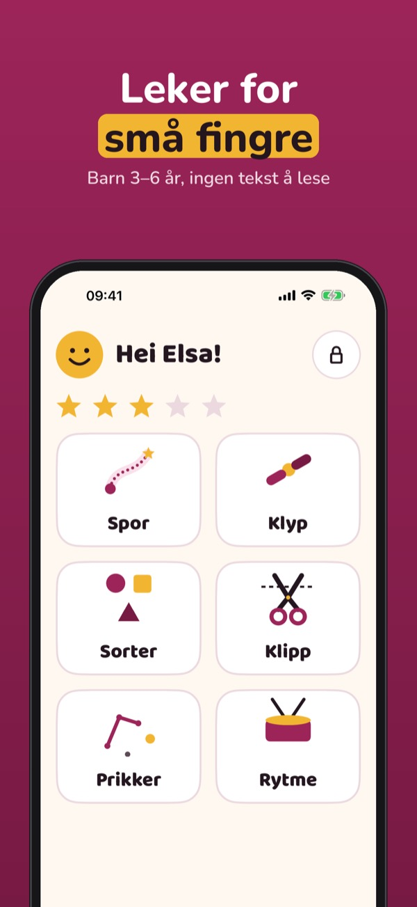
Fingerklar er finmotoriske leker for barn 3–6 år, med et voksenområde der du ser fremgangen og en ferdighetsliste for foreldre, barnehage eller ergoterapeut.
Spore, klype og sortere med tre baner hver, dagens oversikt og timeren kan brukes uten kjøp. Fullversjonen er et engangskjøp som låser opp klippe, prikker og rytme, alle baner, hele ferdighetslisten og flere barn. Ingen abonnement.
Fingerklar er lek og øving. Appen gjør ingen vurdering, stiller ingen diagnose og erstatter ikke ergoterapi eller helsestasjonen. Ingen reklame. Ikke tilknyttet noen forening eller myndighet.
Terms of Use (EULA): https://www.apple.com/legal/internet-services/itunes/dev/stdeula/
Privacy: https://baytechbv.github.io/privacy/fingerklar-eu/
Spor, klip og knib, 3–6 år
Korte lege for små fingre: spor veje, knib, sortér og klip langs linjen. Med overblik og færdighedsliste til dig som voksen. Ingen reklamer.
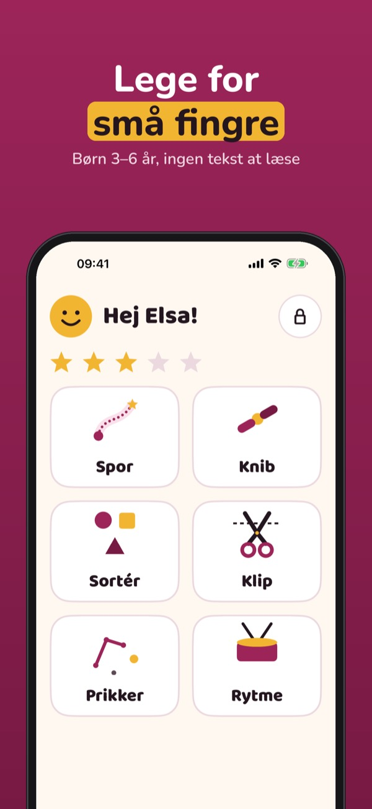
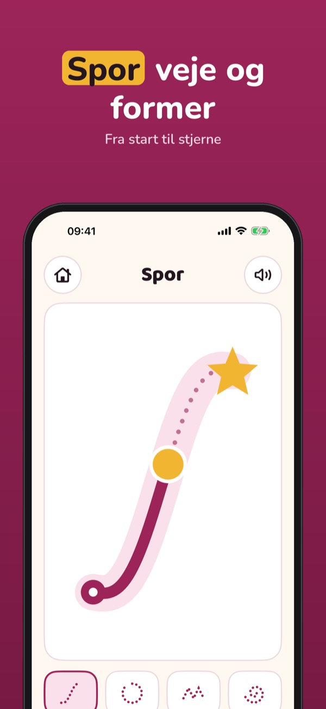
Fingerklar er finmotoriske lege for børn på 3–6 år, med et voksenområde, hvor du ser fremskridtene, og en færdighedsliste til forældre, børnehave eller ergoterapeut.
Spore, knibe og sortere med tre baner hver, dagens overblik og timeren kan bruges uden køb. Den fulde version er et engangskøb, der låser klippe, prikker og rytme, alle baner, hele færdighedslisten og flere børn op. Intet abonnement.
Fingerklar er leg og øvelse. Appen foretager ingen vurdering, stiller ingen diagnose og erstatter ikke ergoterapi eller sundhedsplejersken. Ingen reklamer. Ikke tilknyttet nogen forening eller myndighed.
Terms of Use (EULA): https://www.apple.com/legal/internet-services/itunes/dev/stdeula/
Privacy: https://baytechbv.github.io/privacy/fingerklar-eu/
Jäljitä, leikkaa ja nipistä
Lyhyitä leikkejä pienille sormille: jäljitä reittejä, nipistä, lajittele ja leikkaa viivaa pitkin. Aikuiselle yhteenveto ja taitolista. Ei mainoksia.
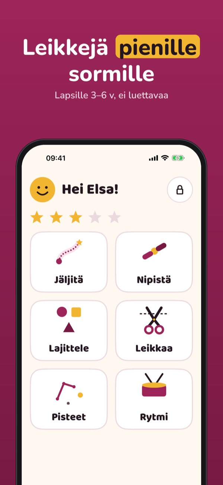
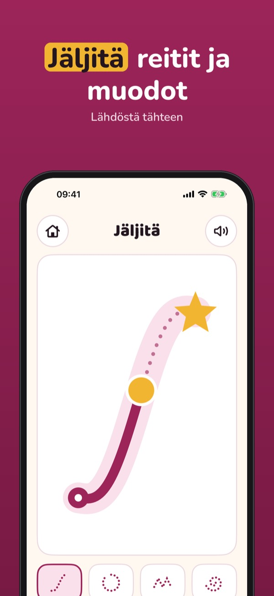
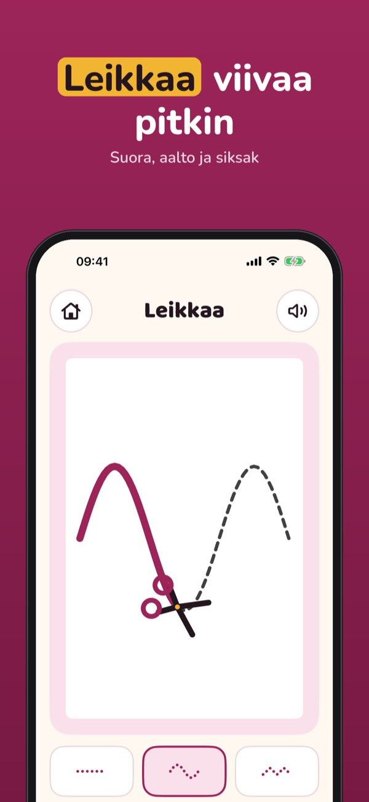
Näppärä on hienomotoriikan leikkejä 3–6-vuotiaille. Aikuisten osiossa näet edistymisen, ja taitolista sopii vanhemmille, päiväkodille ja toimintaterapeutille.
Jäljitystä, nipistystä ja lajittelua kolmella radalla, päivän yhteenvetoa ja ajastinta voi käyttää ilman ostoa. Täysi versio on kertaosto, joka avaa leikkauksen, pisteet ja rytmin, kaikki radat, koko taitolistan ja useamman lapsen. Ei tilausta.
Näppärä on leikkiä ja harjoittelua. Sovellus ei arvioi, ei tee diagnoosia eikä korvaa toimintaterapiaa tai neuvolaa. Ei mainoksia. Ei yhteydessä mihinkään yhdistykseen tai viranomaiseen.
Terms of Use (EULA): https://www.apple.com/legal/internet-services/itunes/dev/stdeula/
Privacy: https://baytechbv.github.io/privacy/fingerklar-eu/
Volgen, knippen en knijpen
Korte spelletjes voor kleine vingers: paden volgen, knijpen, sorteren en knippen langs de lijn. Met overzicht en vaardighedenlijst voor ouders. Geen advertenties.
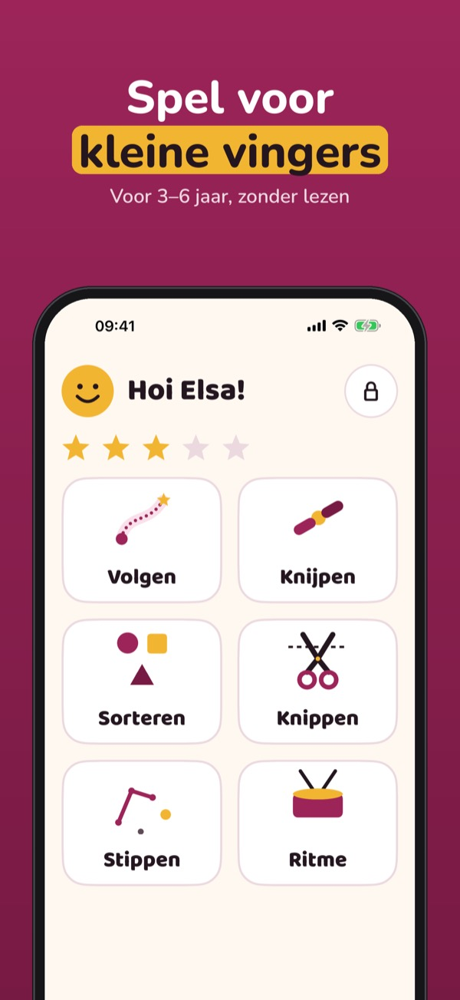
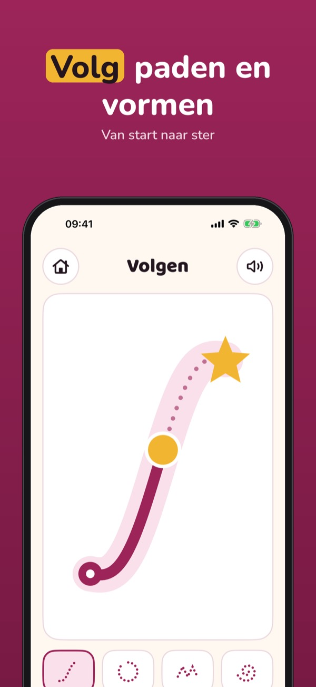
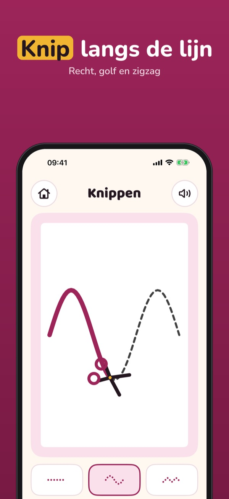
Fingerklar is een set spelletjes voor de fijne motoriek van kinderen van 3–6 jaar, met een ouderdeel voor de voortgang en een vaardighedenlijst voor ouders, school of ergotherapeut.
Volgen, knijpen en sorteren met drie levels per spel, het overzicht van vandaag en de timer kun je zonder aankoop gebruiken. De volledige versie is een eenmalige aankoop voor knippen, stippen en ritme, alle levels, de hele vaardighedenlijst en meer kinderen. Geen abonnement.
Fingerklar is spelen en oefenen. De app beoordeelt niet, stelt geen diagnose en vervangt geen ergotherapie of consultatiebureau. Geen advertenties. Niet verbonden aan een vereniging of overheid.
Terms of Use (EULA): https://www.apple.com/legal/internet-services/itunes/dev/stdeula/
Privacy: https://baytechbv.github.io/privacy/fingerklar-eu/
Nachspuren, schneiden, greifen
Kurze Spiele für kleine Finger: Wege nachspuren, greifen, sortieren und an der Linie schneiden. Mit Überblick und Fähigkeitenliste für Eltern. Ohne Werbung.
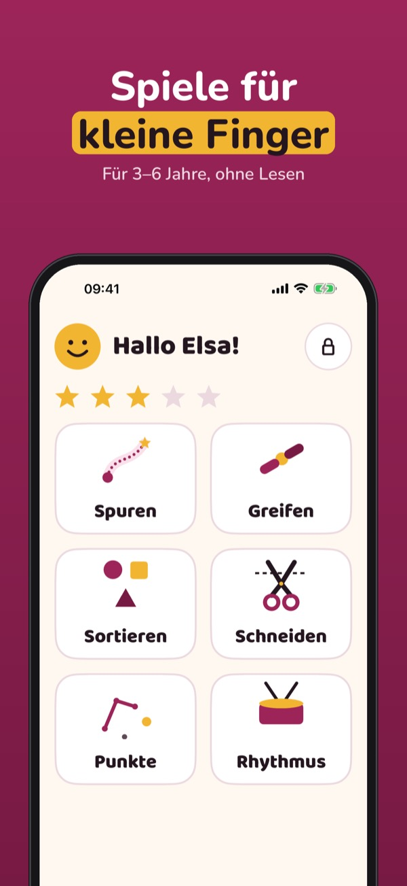
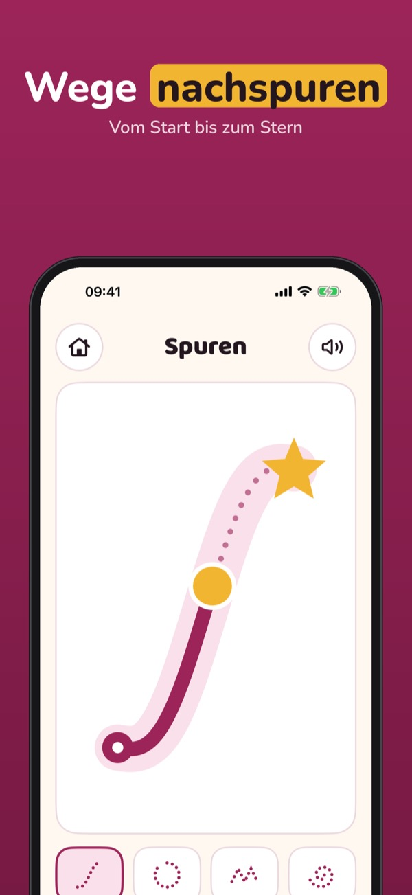
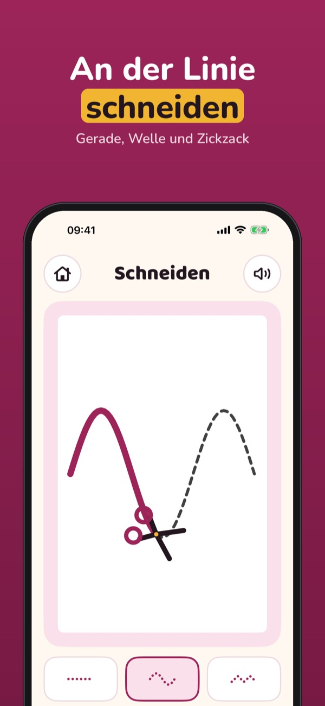
Fingerklar bietet Feinmotorik-Spiele für Kinder von 3–6 Jahren, mit einem Elternbereich für den Fortschritt und einer Fähigkeitenliste für Eltern, Kita oder Ergotherapie.
Nachspuren, Greifen und Sortieren mit je drei Leveln, der Überblick von heute und der Timer sind ohne Kauf nutzbar. Die Vollversion ist ein Einmalkauf und schaltet Schneiden, Punkte und Rhythmus, alle Level, die ganze Fähigkeitenliste und mehrere Kinder frei. Kein Abo.
Fingerklar ist Spielen und Üben. Die App bewertet nicht, stellt keine Diagnose und ersetzt keine Ergotherapie oder kinderärztliche Beratung. Ohne Werbung. Nicht mit einem Verband oder einer Behörde verbunden.
Terms of Use (EULA): https://www.apple.com/legal/internet-services/itunes/dev/stdeula/
Privacy: https://baytechbv.github.io/privacy/fingerklar-eu/